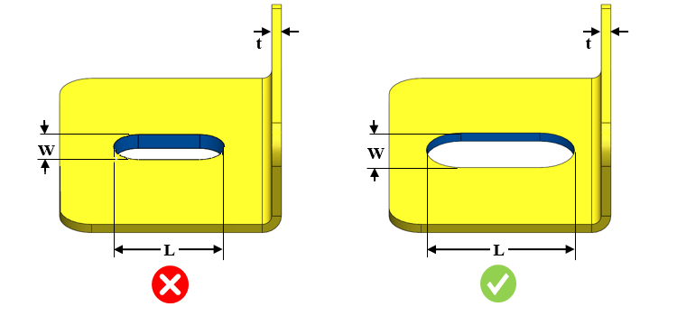
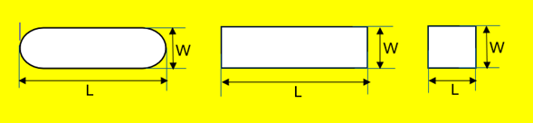

スロット幅を板厚で割った比率は、ユーザーが指定した値以上である必要があります。
スロット長さをスロット幅で割った比率は、ユーザーが指定した値以下である必要があります。
小さな切り欠きは、製造時に破損しやすい細いパンチ（抜き型）につながります。
幅と板厚の比率は、ユーザーが指定した値以上である必要があります。
ルール UI では、材料の一覧が 材料マッピング（Map Material） から読み込まれ、ユーザーは材料およびそれぞれの値を設定することができます。
材料とその値を設定した後、Ctrl+M コマンドを使用して、ルール UI 上で材料グループおよびグレードとともに、設定済み材料の一覧をフィルタリングして表示できます。同じキー（Ctrl+M）を使用して、フィルターをリセットします。

ここでは、
L = スロット長さ
W = スロット幅
t = シート厚さ
注記：
面取り付きスロットにも対応しています。
以下は、長さおよび幅の計算に対応しているスロット形状です。
